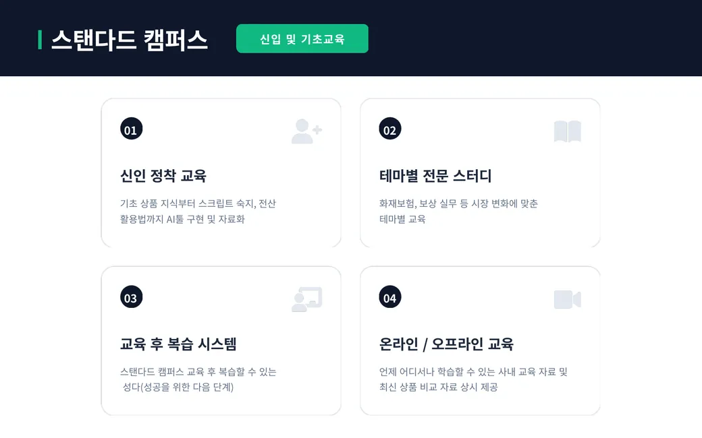
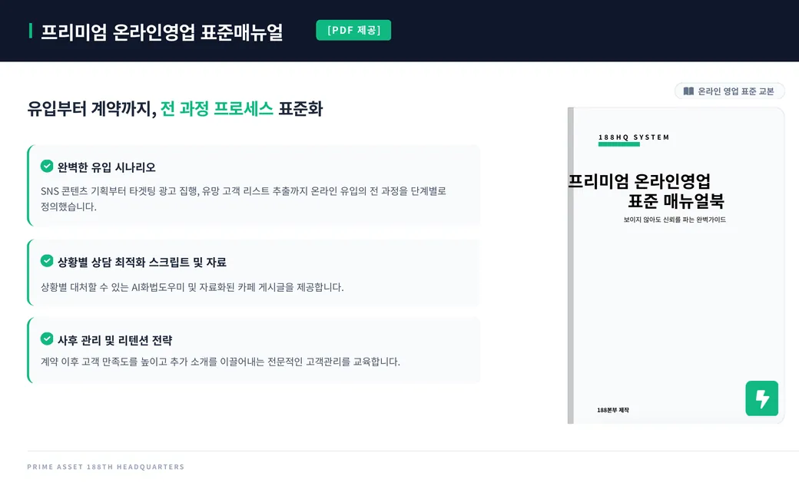
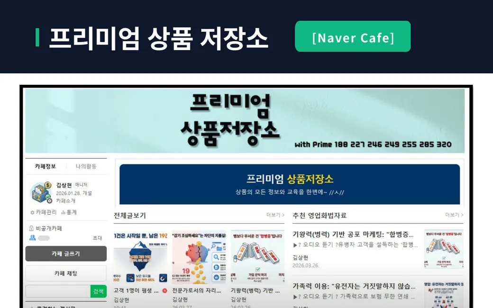
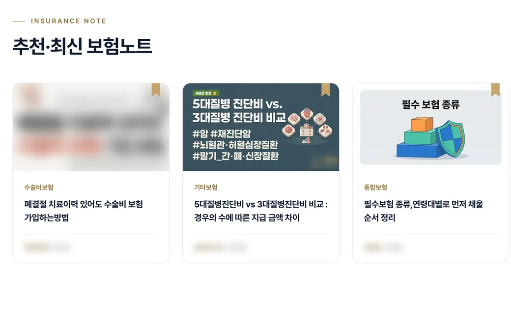
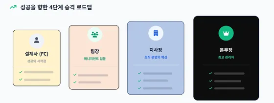

설계사 성장 시스템 배울 것은 많습니다. 그래서 전부 자료로 만들어 두었습니다.
옆에서 한 명씩 붙어 가르치는 방식이 아닙니다. 매뉴얼·자료·시스템으로, 원하는 만큼 빠르게 배웁니다. 필요한 건 당신의 의지입니다.
배우는 순서
처음엔 이 순서로 익힙니다. 단계마다 무엇으로 배우는지 적었습니다.
-
보험판매 프로세스
무엇으로온라인영업 표준매뉴얼북유입부터 계약·사후 관리까지
-
상품과 기준점
무엇으로프리미엄 상품저장소이슈 상품 분석, 핵심 요약, 오디오북
-
설계안 공부
무엇으로상품저장소 상품 아카이브보장·보험료·납입 조건을 비교한 제안서
-
전산 실습
무엇으로AI 전산매뉴얼배서·전산 처리 메뉴와 순서
-
화법 연습
무엇으로AI 영업비서, 실전상담 통합코치상황별 화법 찾기와 상담 연습
실제 자료 미리보기
합류 안내에 쓰는 ‘188본부 성공가이드’의 실제 페이지와, 운영 중인 보험노트 화면입니다. 숫자 조건과 다른 사람의 개인 정보는 가렸고, 가린 곳은 자료마다 적었습니다.
-

성공가이드 17쪽, 스탠다드 캠퍼스 크게 보기스탠다드 캠퍼스 신입 및 기초교육
신인 정착 교육 · 테마별 전문 스터디 · 교육 후 복습 시스템 ‘성다’
-

성공가이드 21쪽, 온라인영업 표준매뉴얼 크게 보기온라인영업 표준매뉴얼 PDF
유입부터 계약, 사후 관리까지 영업의 전 과정을 한 권에
-

성공가이드 20쪽, 프리미엄 상품저장소 크게 보기프리미엄 상품저장소 네이버 카페
상품 분석과 상황별 영업화법 자료를 모아 둔 실제 카페 화면
-

보험노트 화면 크게 보기보험노트 고객이 읽는 보험 콘텐츠
‘인증 보험 전문가’인 설계사가 자기 이름으로 글을 쓰고, 글마다 프로필과 상담 버튼이 붙습니다. DB 대신 공유하는 가망고객 확보 플랫폼입니다.


신입도 경력도, 전국 어디서나
-
경력
자료와 시스템으로 바로 시작합니다.
경력자와 팀장 교육도 모두 자료·매뉴얼·시스템으로 준비돼 있습니다.
-
신입
상담을 신청하면, 가까운 지역의 설계사·팀장과 미팅을 연결해 드립니다.
배울 것은 위의 순서대로, 같은 자료로 익힙니다.
지역에 상관없이 같은 자료로 배웁니다. 신입·경력 모두 전국에서 함께합니다.
합류 절차상담 신청→, 담당자 배정→, 미팅→, 위촉자주 묻는 질문에서 보기
승격 경로
- 설계사성공의 시작점
- 팀장매니지먼트 입문
- 지사장조직 운영의 핵심
- 본부장최고 관리자
규정을 채우면 자동으로 승격됩니다. 세부 규정은 미팅에서 그대로 보여 드립니다.


성공가이드 13쪽 보기승격 조건은 가린 판실제로 쓰는 도구 보기AI 영업비서·AI 전산매뉴얼·상품통합분석기 등은 영업지원시스템에서 업무 순서대로 보여 드립니다.